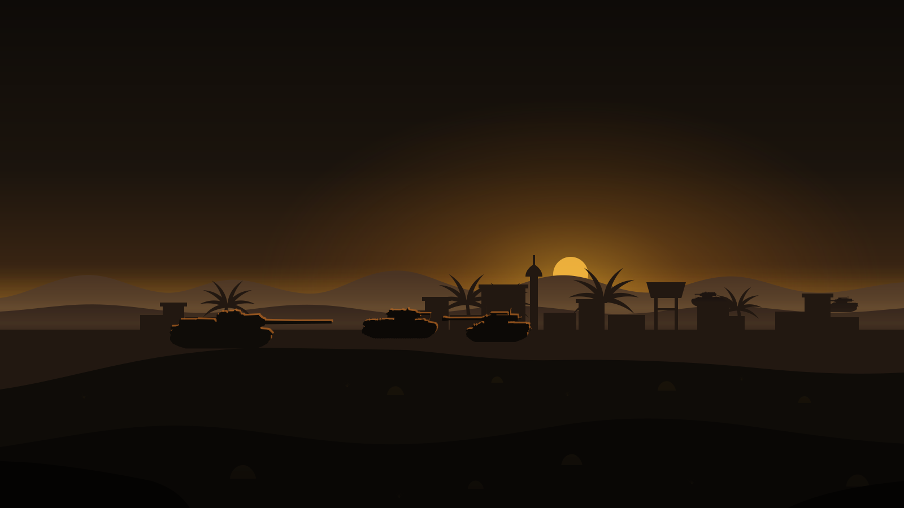
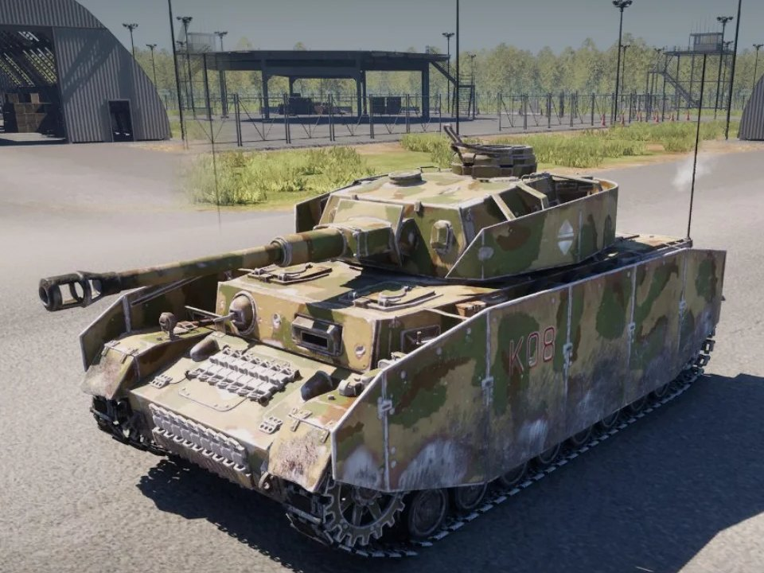
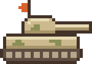
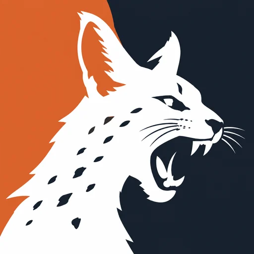

Operation Serval
How it started


I've always loved war games. I used to play some occasionally on the Wii (yes, FPS games on the Wii, I know it's silly), and others like Call of Duty and Half-Life 2.
So when my friend Goldelio, who is developing his own indie game, asked me to design its interfaces, I didn't have to think twice !
Check out the gameGarage, research and battle
Taken from the logo
The game's logo is a serval, half orange and half navy. The orange became the accent. It's the only loud colour in the game, so it's kept for the things you act on: BATTLE, DEPLOY, and the tank you're researching.
Everything else is brown, because it's a war game. The panels are mud, khaki and canvas, colours that sit on a battlefield instead of fighting with it. The navy stays in the logo badge.

-
Orange
#D9622BAccent, from the logo -
Navy
#16212DLogo ground, from the logo -
Field
#14110CScreen ground -
Panel glass
#342D22Panels, at 75% -
Sand
#CDB98ELines and second buttons
Titles are set in Oswald and everything you read in Chakra Petch, the same two fonts as this page.